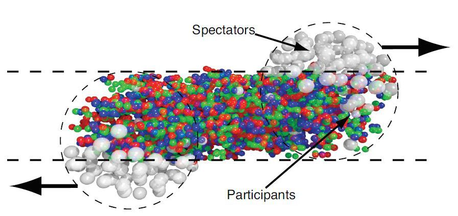
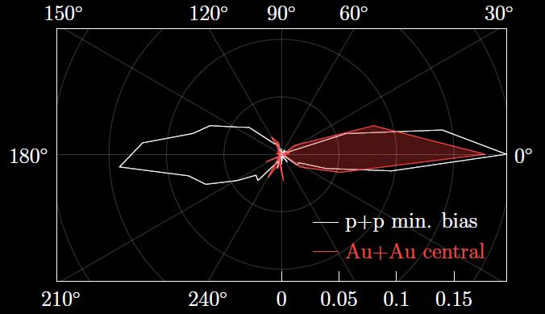

Microssegundos após o big bang, o universo era uma sopa extremamente quente e densa formada apenas por partículas elementares, entre elas, quarks e glúons, que constituem os prótons e nêutrons. A essa sopa damos o nome de Plasma de Quarks e Glúons. Saber mais sobre esse plasma (também conhecido pela sigla em inglês QGP) pode desvendar muitos mistérios referentes à evolução do nosso universo e à estrutura da matéria conhecida. Para compreender o QGP, é preciso primeiro entender as partículas que o formam e como elas interagem, para depois perceber como o QGP se comporta. Veremos também onde o QGP existe na natureza, como o obtemos em laboratório e como físicos teóricos estudam e simulam suas propriedades.



